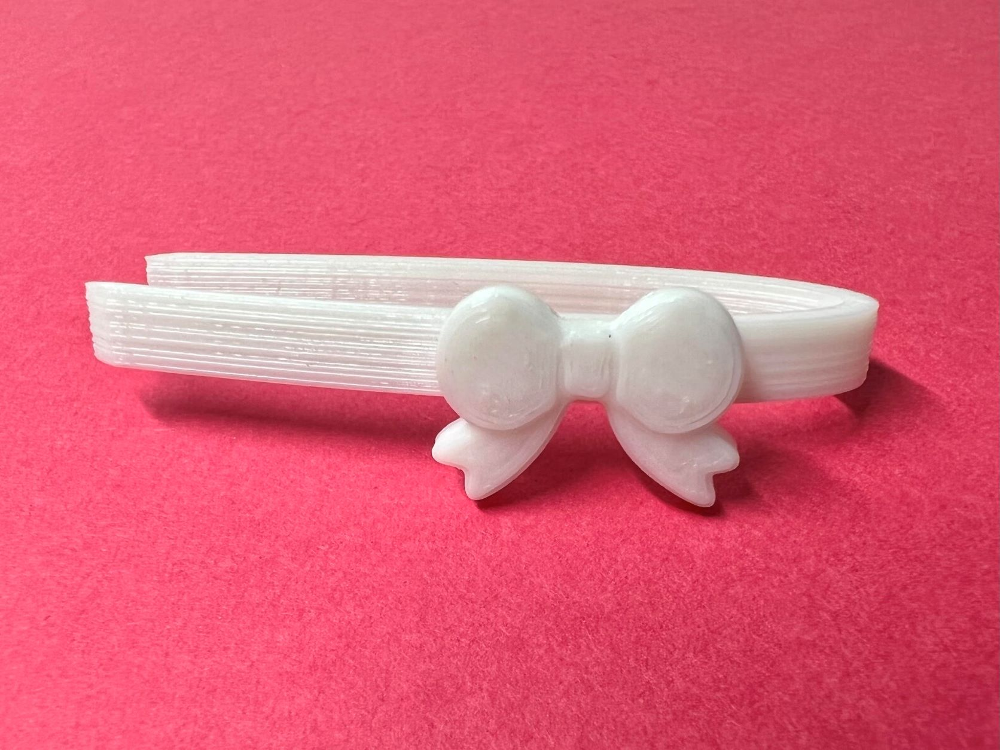
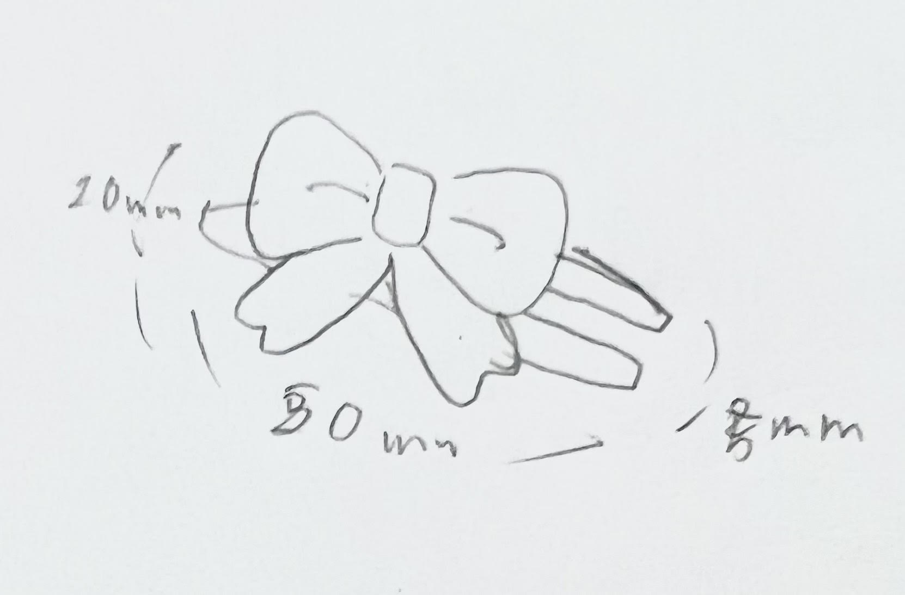
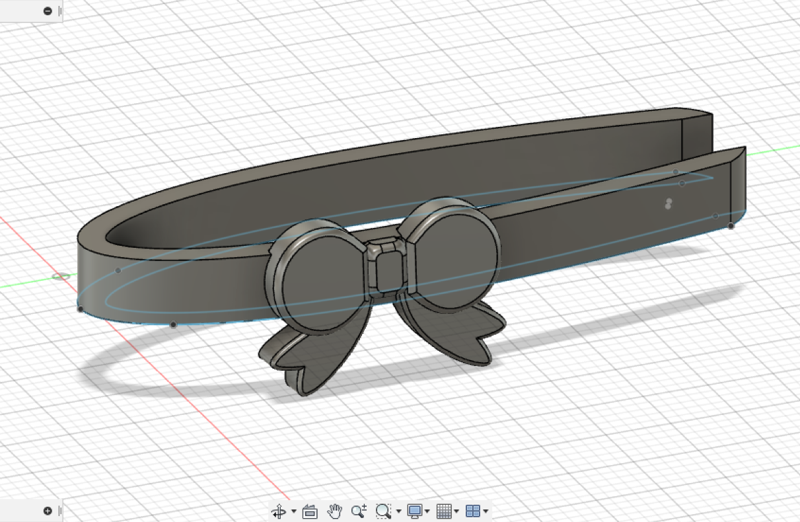
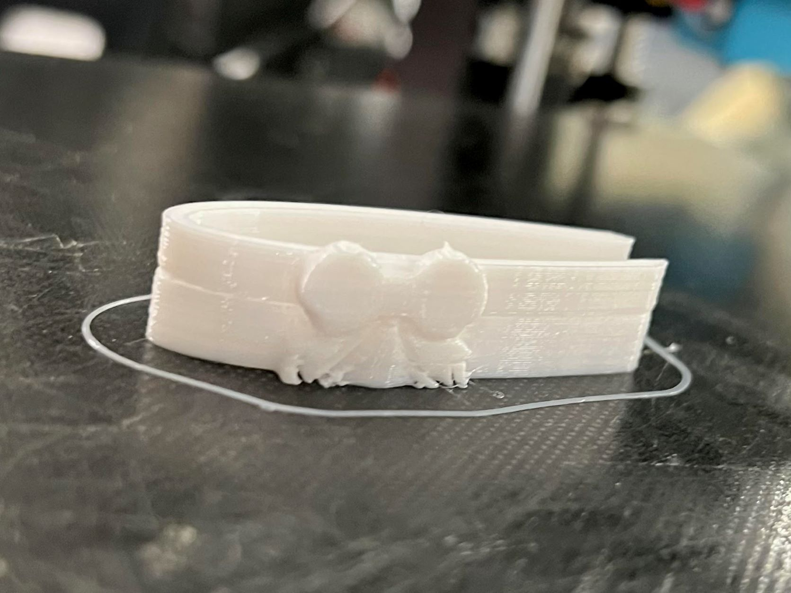
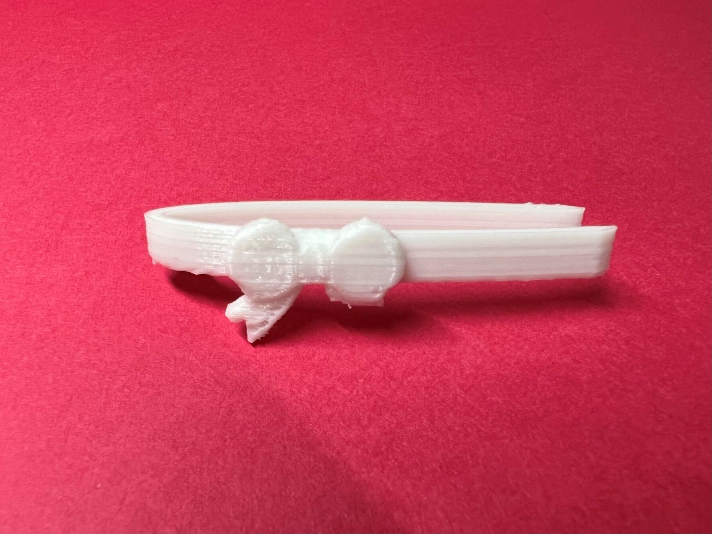
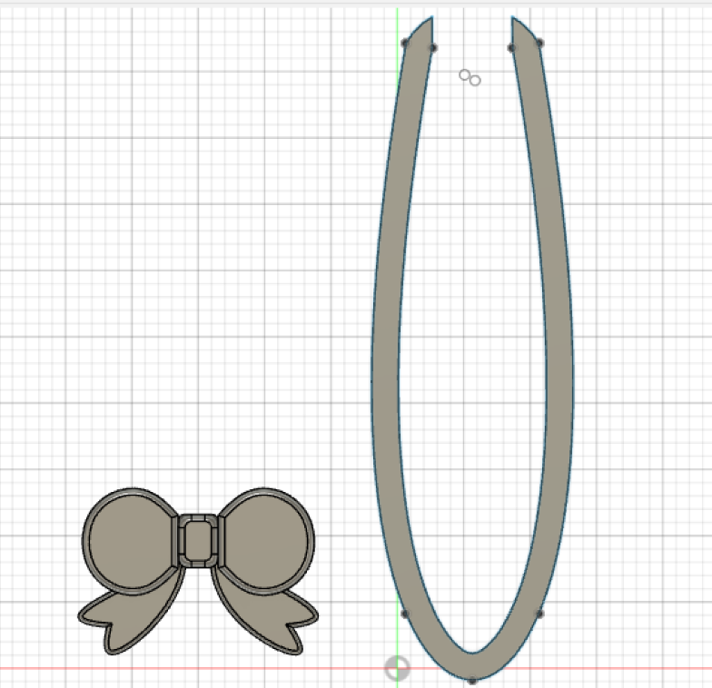
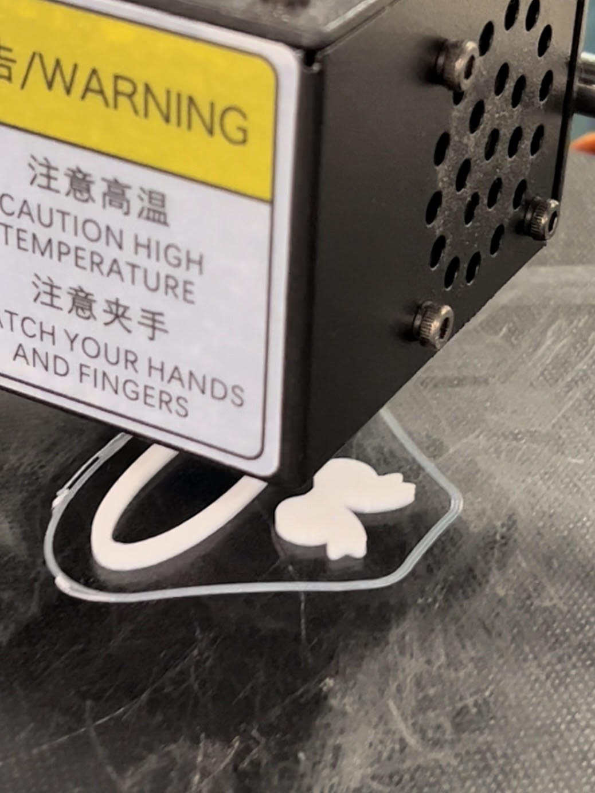
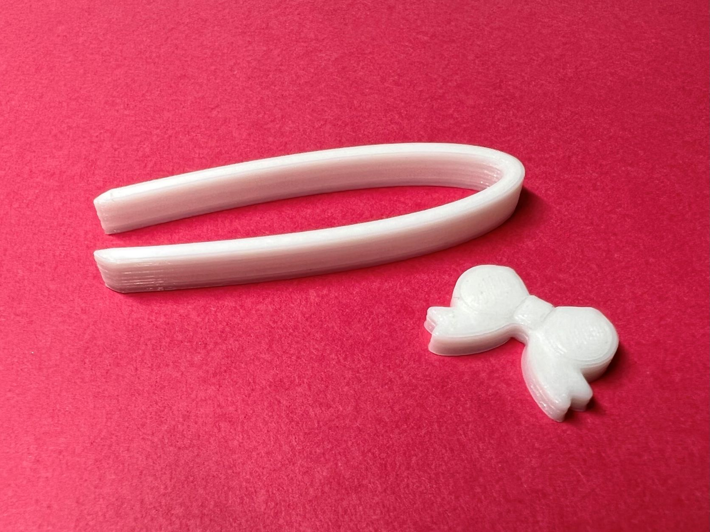
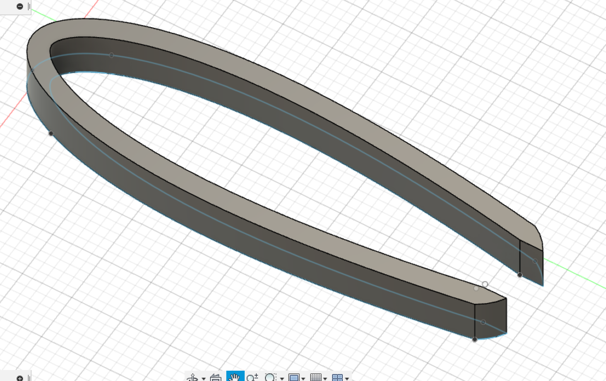
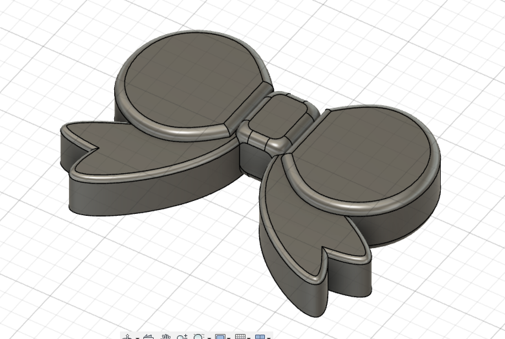

作品のタイトル
リボンピンセット
文房具にかわいいデザインが多いように、こういった小さな道具にかわいさを求める人は多いように思います。
しかし、私はこれまでピンセットはシンプルなものしか見たことがありませんでした。
そのことから、利便性は失わないようにしながらかわいいピンセットを作ろうと考え製作しました。
構想段階のスケッチ

制作プロセス

最初に出力したSTLです。

リボンが下にはみ出ていたためサポートがたくさんついてしまっています。

サポートを外すのに失敗し、リボンも一緒にとれてしまいました。

次は結合していたリボンとピンセットを切り離して出力しました。


接着剤でつけるだけなので、ピンセットにリボンを埋め込むことができず強度が心配ですが、サポートがなくなっただけでなく、リボンの形もきれいに作れました。

ピンセットの先は直線と曲線を使って、市販品のように作れました。

今回一番苦労したのがリボンのスケッチで、かなり時間がかかりました。
ソリゥドのフィレットで角を丸くしようとすると、複雑な形だったためかエラーばかり出てきましたが、カーブの大きさを変更して解決できました。
フィレットはもう少し大きいものを使うときにかなり役立ちそうな機能だと感じました。